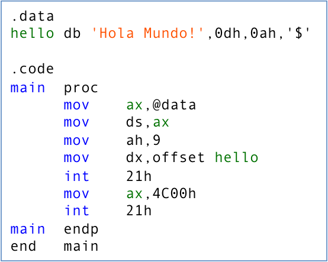


Teoría 102
Lenguajes
1 Algoritmo
1.1 ¿Qué es un algoritmo?
- Descripción detallada de cómo resolver un determinado problema
- Secuencia de acciones para obtener la solución al problema
- Conjunto de instrucciones que se ejecutan en un orden determinado
- ¿Cómo cambiar las pilas del mando de la TV?
- Tomar el mando de la TV
- Localizar la tapa de las pilas
- Quitar el tornillo (si tiene)
- Abrir la tapa
- Quitar las pilas viejas
- Colocar las pilas nuevas
- Colocar la tapa
- Apretar el tornillo (si tiene)
1.2 Anatomía de un algoritmo
- Declaración precisa de condiciones de partida: entrada
- Especificación del estado final: salida
- Descripción detallada de los pasos individuales
- Operaciones simples que ayudan en la progresión hacia el estado final
1.3 Características de un algoritmo
- Precisión : Expresarse de forma no ambigua
- Determinismo : Mismo estado final para las mismas entradas
- Finitud : Tener una descripción finita
1.4 Limitaciones computacionales
- Problemas ambiguos
- Problemas con demasiados pasos para acabar
- Problemas matemáticamente imposibles
1.5 Programa = algoritmo + estructuras de datos
2 Lenguajes de programación
- Un lenguaje de programación es
- un lenguaje formal que
- especifica una serie de instrucciones que,
- al ser ejecutadas por un ordenador,
- permiten realizar una tarea concreta
El idioma en el que los humanos se comunican con las máquinas
2.1 Estilos de programación
- Diferentes estilos: imperativa, funcional, declarativa, etc.
- En esta asignatura, nos centraremos en la programación imperativa
- Programación imperativa: Estado + Instrucciones
- Estado: conjunto de variables que definen de manera unívoca la situación de un sistema
- Instrucciones: operaciones que modifican el estado del programa
- Cada instrucción ayuda a la progresión hacia el estado final
2.2 Niveles de lenguajes de programación
- Un computador solo entiende instrucciones sencillas:
- ISA (Instruction Set Architecture): Es el conjunto de instrucciones que un procesador puede ejecutar
- Cada arquitectura de procesador tiene su propia ISA
- Estas instrucciones básicas bastan para construir programas complejos
- Según su nivel de abstracción:
- Lenguajes de bajo nivel se encuentran cerca del lenguaje de la máquina
- Lenguajes más sofisticados (de alto nivel) buscan acercar la programación al lenguaje humano
2.2.1 Código máquina
- Lenguaje que entiende el ordenador: código máquina
- Anteriormente, los programas se escribían directamente en codificación binaria (ejemplo: perforando tarjetas)
Agujero = 1, sin agujero = 0- Errores frecuentes, muy difíciles de encontrar y corregir
- Se programaba directamente en base al hardware a usar
- Un programa escrito para un hardware no es compatible con otro diferente
- Poco versátil

2.2.2 Lenguaje ensamblador
- Permite escribir instrucciones del procesador y representar los datos con identificadores más entendibles por el programador
- Sin embargo, todavía es difícil de entender (bajo nivel)
- Todavía está condicionado por el hardware a usar:
Diferentes máquinas = diferentes programas- Poco versátil

2.2.3 Lenguajes de alto nivel
- Soportan abstracciones que entiende el programador,
¡pero no la máquina! - Más fáciles de utilizar para programar
- No dependen de la máquina utilizada
- Menos eficientes que los de bajo nivel
- Necesitan compiladores/traductores al lenguaje máquina
- Facilitan detección de errores
2.2.4 Primer lenguaje de alto nivel: FORTRAN, 1957
- FORTRAN (FORmula TRANslation): John Backus, 1957
- Código fuente: texto escrito en lenguaje de alto nivel (texto plano)
- Compilador: traduce el código fuente a lenguaje máquina
- Aún se utiliza en:
- Ciencia e ingeniería
- Finanza
2.3 Evolución de los lenguajes

3 Lenguajes de alto nivel
3.1 Tipos de lenguajes de alto nivel
Lenguajes compilados
- La traducción se realiza una sola vez durante la compilación
- Durante la ejecución, no se requiere el código fuente
- Cada plataforma requiere su propia compilación
- Usos: sistemas operativos, videojuegos, edición de vídeo…
- Ejemplos: Pascal, Ada, C/C++, Fortran…
Lenguajes interpretados
- La traducción se realiza cada vez que se ejecuta el programa
- Un intérprete interpreta y ejecuta las instrucciones: más lento
- El mismo programa sirve en múltiples plataformas: portabilidad
- Usos: aplicaciones web, sistemas multiplataforma, telfs. móviles…
- Ejemplos: Python, Perl, PHP, Scratch…
3.2 Compilador
- Código fuente \(\rightarrow\) Aplicación ejecutable
- Requiere tres elementos: un compilador, un ensamblador y un enlazador
- Compilador: Código escrito \(\rightarrow\) Código ensamblador
- Ensamblador: Código ensamblador \(\rightarrow\) Código máquina (ficheros objeto)
- Enlazador: Código máquina (ficheros objeto) \(\rightarrow\) Código maquina ejecutable
- El compilador, no sólo traduce el código, sino que también verifica:
- Revisión léxica (¿usa las palabras reservadas correctamente?)
- Revisión sintáctica (¿la frase es gramaticalmente correcta?)
- Revisión semántica (¿tiene sentido la frase?)
3.3 Interprete
- Código fuente \(\rightarrow\) Ejecución
- Sólo requiere un elemento:
- Interprete: lee el código fuente y lo ejecuta directamente
- Ventajas:
- Portabilidad: no es necesario compilar para cada plataforma
- Facilidad de depuración: errores más fáciles de encontrar
- Flexibilidad: permite ejecutar código de forma interactiva
4 Entorno Integrado de Desarrollo
4.1 Integrated Development Environment (IDE)
Aplicaciones integradas compuestas por:
- Un editor avanzado de código fuente
- Resalta las palabras reservadas
- Gestiona las sangrías del texto
- Un intérprete o compilador
- Una consola o terminal para ejecutar comandos
- [Opcional] Un depurador integrado (no lo veremos en esta asignatura)
4.2 Proceso de trabajo
- Diseño de una solución al problema
- Codificación de la solución
- Ejecución del programa
- Verificación del resultado
- Mientras hay errores
- Corrección de errores
- Volver al paso 3